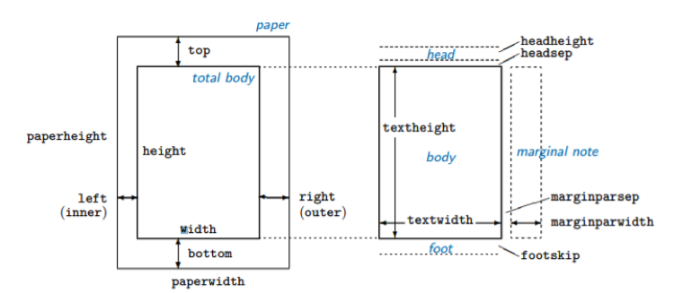

19 Introduction
This Section will cover:
- Beamer Presentations
- Writing long documents, such as dissertations or books
- Tips and Tricks
19.1 Beamer Presentation
In the previous parts of the course, you have learned how to create documents. Note that until now you have used the article document format as specified by the \documentclass{article} tag. includes many other document classes that you can use. As already mentioned at the beginning of the course, the class is essentially several pre-set document parameters, such as the size of pages, default font sizes and families for different environments, as well as specific commands. In this section, you will learn about another very popular class of documents called beamer, which allows you to create presentations, like those you could prepare using Microsoft PowerPoint or similar software.
19.1.1 First Beamer Presentation
The first example shows how to create a simple Beamer presentation consisting of two slides. Every beamer presentation begins with \documentclass{beamer}. Beamer slides are called frames and every slide is simply a separate frame environment, opened by \begin{frame} and closed by \end{frame}. As you can see, many familiar structures used in the article class, such as itemize, enumerate or vspace also work in the beamer format.
19.1.2 Title Frame
Most presentations begin with a slide containing its title and author’s credentials. Setting up a title frame in Beamer presentations is like preparing a title page in articles. First, you need to specify the title and other details, such as the author’s name, date or institution you work for in the preamble of your document. Then, you simply use the \titlepage tag within the frame environment. Note that in the example it is not necessary to explicitly open and close the frame environment using \begin and \end, as we are using only one tag inside it, and thus we can use a more concise formulation \frame{\titlepage}.
19.1.3 Themes
Like other presentation software, comes with several pre-defined themes, as well as allows you to define themes of your own. You can select a pre-defined theme using \usetheme{} in the preamble of your presentation. Each of the pre-defined themes can also be customized in terms of its colour scheme, using the \usecolortheme{}. Note that you need to provide it with an existing colour scheme name rather than an arbitrary one. You can find an example list of beamer themes and their colour variants here. One of the important properties of the themes is that they often include a footer or a header which appears on every slide, summarising the information about the presentation, such as author, title, date or current slide number. The presentation information you provide in the preamble can often be too long to fit into the footer/header, so you can provide an optional short or abbreviated version of these. To do that, you can use the form \author[short title]{Full title}, where short title will appear in the document footer and full title is only displayed on the title page. This can be seen in the example.
19.1.4 Frame Title
Each frame can also have its heading. This is simply added using the \frametitle{title} tag within the frame environment, where title is the heading you want to give to a certain frame.
19.1.5 Sections
You can divide a beamer presentation into sections and subsections just as you would do in a article. Note that these sections should be defined between frame environments, as shown in the example.
19.1.6 AtBeginSection
Note that adding the section did not make any changes to our slide content or titles. This is because, by default, beamer uses section titles only to structure your document (for example, they can be seen when you add a table of contents, which will be discussed later). If you want each section to begin with a section title slide, you need to define that explicitly in the preamble of the file, using AtBeginSection{}. You fill the curly braces with a frame, which will appear at the beginning of each section and you can use \insertsectionhead parameter to reference the title of a section. Essentially, you are providing with a template of a frame that will be used whenever a new section is started. So, adding this code in the preamble will cause to add a slide with vertically centred section title in large bold font at the beginning of each new section. Note that this applies also to subsections – in that case, you would simply use AtBeginSubsection and \insertsubsectionhead.
19.1.7 Colour Boxes
To improve presentation formatting, it is often good to put your text within a box that matches the presentation theme. This can be particularly useful for section title slides discussed before. Such boxes can be added to a beamer slide using the beamercolorbox environment. It is opened by \begin{beamercolorbox}[options]{color}. There are a number of options that can be used in the brackets to customize the box properties. The most useful ones include:
- sep=dimension - specifies the separation between the text in the box and the box boundaries (dimension is a length value, for example, 5cm or 12pt)
- center, right and left – specifies the text alignment within the box
- round = true or false - determines whether the box corners are rounded or not
- shadow = true or false – specifies whether a shadow appears behind the box
The curly braces determine to colour of the box. Note that you cannot use colour names or even colour themes as a keyword in the curly braces – instead, you can only refer to colours explicitly defined for the theme you are using or an object within the beamer presentation – it usually makes sense to set it to ‘title’ or ‘frametitle’, which sets the colour of the box to the same one as the background behind the title of the frame.
19.1.8 Table of Contents
Adding a table of contents is as easy as it was in the article class – it is done by simply entering the \tableofcontents tag in a separate frame. So the basic table of contents is set by:
The \tableofcontents tag also comes with some options. A particularly useful one allows to only highlight the number of the current section in the table of contents. This can be done by using:
If you start your presentation with a table of contents acting as a presentation outline and want to gradually reveal the titles of subsequent sections while discussing the structure, then the pausesections option might be useful. When it’s used, each new element of the table of contents will be introduced on a new slide.
19.1.9 Overlays and Pauses
When delivering a presentation, revealing the entire content of a frame can often be overwhelming for the audience, who may get distracted trying to read everything, instead of listening to the person presenting. To keep everyone focused, it often helps to reveal the information one step at a time. Beamer makes this very easy (arguably easier than other presentation software such as PowerPoint), with the \pause tag. Everything following the tag will appear on the next slide.
Order of appearance of frame elements can be further customized using overlay specification. The angle brackets (“<” and “>”) used after a markup tag determine on which slides will a certain element or formatting appear. For example, <1> stands for slide number one (of the current frame), <2-4> for the slide range between 2 and 4, and <3,5> for slide 3 and slide 5. The first example shows how it can be applied to a bullet-point list elements appearance:
In the second example, you can see that the overlay specification also works with formattings, such as bold font, italics or font colour.
Note that the \alert tag is often used to highlight the text in a colour, which is determined by the presentation theme and colour theme.
19.1.10 Columns
The beamer class also allows you to control the placement of objects within a frame. The columns environment is used to specify a multi-column frame layout, which offers similar functionality to the ‘two content’ and ‘comparison’ layouts in Microsoft PowerPoint. The environment is opened by \begin{columns}[options] and closed by \end{columns}. The options that can be specified are shown in the table below – you can use two of them, by separating them by commas, for example, \begin{columns}[t,onlytextwidth]. To specify a column, simply use \column{width} within the columns environment, where the width parameter controls the width of the column.
Table \(\ref{tbl:colformat}\) lists some useful options for the column environment:
19.1.11 Blocks
Blocks are useful when you want to highlight the importance of some text, for example, a quote. They are used to create a separated part of a Beamer frame with its own heading and distinct background color.
19.1.12 Figures and Tables
You can use figures and tables in Beamer presentations just as you would in articles. For example, you can present the relationship between two variables in two columns, one showing a regression table and the other the scatter plot of the data.
19.1.13 Summary
The functionalities listed in the previous slides are only a very basic list – Beamer offers many more options and graphic structures than you can use – a comprehensive overview is offered by this rather length Beamer documentation.
Important hint: when working with Beamer in practice, sometimes errors may persist when you re-compile the PDF file (by pressing the “play “ button in TeXStudio) even though your code is correct. In that case, this might be due to the auxiliary files created by TeX when you compile the document –a solution that is always worth trying is deleting these files – either by hand or using the “Clean auxiliary files” option in the “Tools” tab of TeXStudio.
To delete all of them, enter the following list into the “file extensions” field: log,aux,dvi,lof,lot,bit,idx,glo,bbl,bcf,ilg,toc,ind,out,blg,fdb_latexmk,fls,snm,nav,synctex.gz
19.2 Books
The last document class covered in the course is book. Books can be thought of as a more complex version of the article class – they are likely to consist of multiple chapter files with one “master” file binding them all together. This class is particularly useful when preparing a longer piece of academic work, such as a PhD thesis. This section will briefly go through an example book structure which you can download here. The book folder should always follow a tree-like structure, summarized below. Each chapter is a separate tex file and all the chapters are stored in the same folder. Similarly, all the image files used in the book are stored in a separate folder, with sub-folders corresponding to each chapter number.
19.2.1 Main File
The main file, mybook.tex binds everything together using the main document environment. The \include command inserts the book chapters in a specified order. The \input command is used to “copy and paste” the content of a tex file. In this case, it inserts the content of the header.tex file, which contains the book’s preamble. Finally, the \addcontentsline command is used to add the “Bibliography” entry to the table of contents.
19.2.2 The Preamble File
The header.tex file contains everything that would normally be put in the document’s preamble, i.e. before the \begin{document} statement. Note that this is done for clarity and is not necessary when using a simple book structure like the one in the example – the preamble could simply be placed at the beginning of the mybook.tex file, like in other document classes. However, with the growing complexity of the book, your preamble is likely to get filled with multiple package references and other code customizing the final output. Because of that, storing the preamble in a separate file is likely to make your life easier and keep the length of the main file to a minimum, so that it gives you a good overview of your book’s structure.
When working with large documents, compiling the entire document while working on a specific chapter only may waste a lot of time. To avoid it, you can use the \includeonly tag in the preamble of the book. It explicitly tells the compiler which chapter files to use when you hit the “play” button in TeXStudio. For example, using \includeonly{chapters/01_introduction} will mean that the \include tags in the main file referencing other chapters than 01_introduction.tex will be ignored and their content will not be compiled in the final output.
19.2.3 Chapter File
The chapter file resembles a normal document, except for the fact that it has neither a preamble nor a \begin{document} statement. Instead, it just begins with \chapter{chaptertitle}. All the packages used in the chapters are defined globally in the book’s preamble.
19.2.4 Listings
Reproducibility of results a key prerequisite of methodological transparency and one of the most important facets of quantitative research in social sciences. Every respectable scholar or analyst should allow his audience to go through his research cycle step-by-step, which involves providing them with the original data and the source-code used for the statistical analysis. Reading someone else’s code might often be a difficult task and providing some comments is likely to make it easier. The listings package allows you to include chunks of code in your documents, which makes it possible to prepare technical reports and appendices explaining your quantitative research.
A Basic Example
Like every other package, listings needs to be loaded in the preamble of the document. The first example shows the minimal structure of a document using listings. \lstset{language=R} is used to determine which language will you use as the input (in this case we use R). Then, the lstlisting environment is used to include code in the text. Note, that in the output, a different text style is used for function names, such as function, sqrt, sum, comments and variables to make the code more readable.
19.2.5 Formatting Listings
To make the code you include in your document more readable, you can add additional formatting to the lstlisting environment by setting different parameters through lstset. The example below shows some most important things that can be changed – you can check out the Listings package documentation for an exhaustive list.
See Table \(\ref{tbl:listformat}\) for a list of common parameters:
19.2.6 Using Source Files
Copying and pasting your code might be effortful, especially if you make any changes to it after you put it in your document. Instead, you can use \lstinputlisting[lines]{filename} tag, which allows you to input code directly from the source file you used in the analysis (for example an R script). Additionally, you can use the option brackets [] to specify the lines you want to insert. For example \lstinputlisting[firstline = 2, lastline = 10]{script.R} will input lines 2 to 10 from file script.R (provided that the file is in the same location as the .tex file).
19.2.7 Inline code
Finally, you can use your code in the middle of your regular text, by using , for example:
This makes it easy to reference specific parts of your syntax. It can also be used with a source file, like \lstinputlisting.
19.2.8 Natbib – advanced citations
While citations and references were already covered in part 2 of the course, the natbib package extends BiBTeX’s capabilities and offers more flexibility in customizing bibliographies by including new bibliography styles and extending the \cite command. The structure of the bibliography file (.bib) used by natbib remains the same as in BibTeX.
Same as in BiBTeX, the bibliography style is set using the \bibliographystyle command. Useful styles include agsm which sets Harvard-like references (the citation style officially used by the PAIS department), as well as plainnat and abbrvnat (which are similar, but the latter uses first name initials instead of full names). By default, some styles (such as apalike or agsm) use round parentheses, while others (like plainnant) use round brackets. This can be changed by loading the natbib with the round option (\usepackage[round]{natbib}) which overrides the default style parentheses to be round or the square option, which does the opposite. Note that when changing the bibliography style in a file once rendered, you need to delete the .bbl auxiliary file which appears in the same folder as your rendered document.
Natbib also implements multiple versions of the citation command. Rather than using \cite as in BiBTeX, the simplest form of bibliography citation is \citep. \citet is a second alternative, which inserts the author’s surname without parentheses, followed by the publication year enclosed in parentheses. This allows you to cite a resource when using the author’s surname in the sentence, as demonstrated in the example.
Both \citep and \citet have their alternative versions - \citealp and \citealt, which remove the parentheses entirely. The difference between \citealp and \citealt is that the latter separates the author’s name and publication year with a comma. This does not apply to the agsm bibliography style, which uses no comma between author’s surname and year – in this case, \citealp and \citealt are equivalent.
Adding an asterisk * at the end of each natbib’s citation command overrides the default et al. abbreviation commonly used in citations of resources with multiple authors and uses the names of all authors instead (this is not supported in some styles, such as apalike). Using the square brackets allows you to add prefixes and suffixes in the citation. So, when using \citep[option1][option2]{resource}, the option1 will be inserted before and option2 after the citation content (see example). Finally, using the \citetext command you can join multiple natbib citations and add your comments in between them, as shown in the example.
Table \(\ref{tbl:listnatbib}\) summarizes the functionality of different citation commands in Natbib. Check out the .tex file used to produce the table – it uses the listings package to cite code inside of a document.
19.3 Tips & Tricks
This section covers some useful tips & tricks and extensions of the previously discussed functionalities of .
19.3.1 Page Dimensions
The package geometry provides an interface to change global parameters of the document and adjust various page dimensions. This can be done by either loading the package using \usepackage{geometry} and then by using the command \geometry{options} in the preamble of the document, or more concisely by specifying the options when loading the package, by \usepackage[options]{geometry} – these are equivalent and can be used interchangeably, although the majority of users seem to prefer the latter since it’s shorter. The options are comma-separated parameters that you may want to adjust, such as the paper size (a4paper, a3paper, legalpaper, etc.), textwidth and textheight (which are self-explanatory) or margin (which sets all the margins to a certain length).
These two are equivalent.
The list of some basic parameters is shown in Table \(\ref{tbl:geometry}\). Each of them can be set using different length units such as cm or in. The total size of the page is divided into the text body and margins, which have separate parameters – this is shown in Figure adopted from the geometry package documentation, which discusses the intricacies of different parameters at length.

You can also change page dimensions mid-document, using the \newgeometry{options} command in your document with the options listed above. Then, using \restoregeometry will restore the parameters of all pages set after \newpage or \clearpage to those set in the preamble. This is demonstrated in the example.
19.3.2 Styling
19.3.2.1 Page number
\pagenumbering{style} – determines numbering style from the page it’s used on. Note that whenever you use this command, the page numbering starts from the beginning. Styles that can be used include arabic, alph (lowercase letters), Alph (uppercase), roman (lowercase roman numerals), Roman (uppercase roman numerals).
19.3.3 Shortcuts and Special Escapes
19.3.3.1 Shortcuts
Texstudio also comes with multiple keyboard shortcuts which make preparing documents in slightly faster. Some of the most useful shortcuts are listed in Table \(\ref{tbl:texstudio}\).
19.3.3.2 Special Escapes
Some of the characters such as “$”, “%”, “#” or “_” have a special meaning in and by default are interpreted as elements of the syntax, rather than the text. You can override it by using the “escape” signs, which is the backslash “\”. So, for example, if you want to compile “15%”, you need to typeset “15\%” to escape the percentage character. To escape the backslash itself, use the tag \textbackslash.